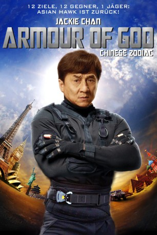
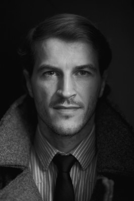
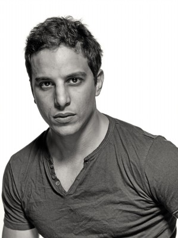
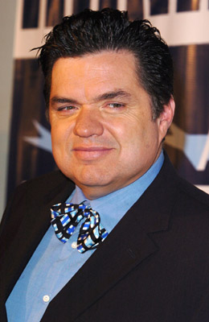
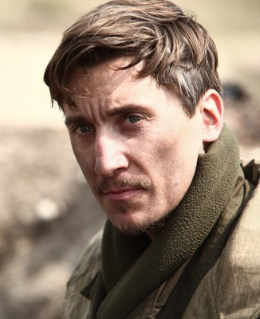
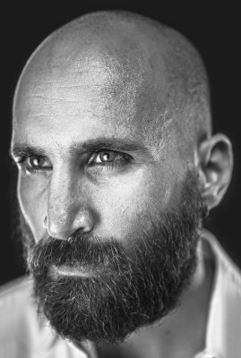
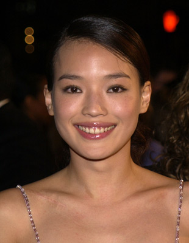
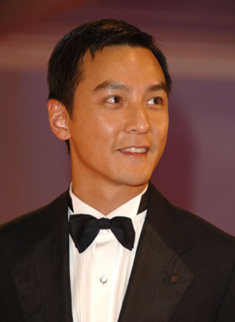
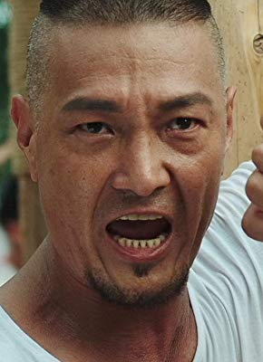

#3135 Armour of God - Chinese Zodiac
 
 IMDB-Wertung: 6.1 / 10
IMDB-Wertung: 6.1 / 10  Metascore: 29
Metascore: 29 
Meisterdieb und Schatzsucher Asian Hawk bekommt den Auftrag seines Lebens. 12 Bronzeköpfe der Chinesischen Tierkreiszeichen wurden während der Opiumkriege gestohlen und sind über den Erdball verteilt. Der Auftrag lautet – aufspüren und zurück in den Sommerpalast nach Peking bringen. Der Auftrag führt Asian Hawk in mehrere Kontinente. Er muss sich durch Paris schlagen, steht Dschungelkämpfern gegenüber und kämpft selbst in der Luft mit übermächtigen Gegnern. Knifflige Rätsel warten an jeder Ecke und eine brenzlige Situation jagt die andere. Kann Asian Hawk alle wertvollen Bronzeköpfe wiederbeschaffen?
Jahr: 2012
Dauer: 109 Minuten
FSK: 12
Land: Hong-Kong Studio: Splendid FilmTonspuren: DTS - ,
Untertitel: Deutsch, Englisch,
Auflösung: 1080p (1920x808) Größe: 8960 MB
Genre: Action, Abenteuer
Regisseur:  Jackie Chan
Jackie Chan
Drehbuch: Frankie Chan, Jackie Chan, Edward Tang, Stanley Tong
Soundtrack: Gary Chase, Nathan Wang
Darsteller:
 Jackie Chan als Asian Hawk
Jackie Chan als Asian Hawk- Sang-Woo Kwon als Simon
- Fan Liao als David
- Laura Weissbecker als Catherine de Sichel
-  David Torok als Michael's Bodyguard
-  Alaa Safi als Vulture
-  Oliver Platt als Lawrence Morgan
- Christian Bachini als (rumored
- Myriam Blanckaert als French maid
 Stephen Chang als Asian
Stephen Chang als Asian- Bo-lin Chen als Wu Qing
-  Paul Philip Clark als Pierre's Bodyguard
- Caitlin Dechelle als Katie
-  Tomer Oz als Pirate
-  Qi Shu als David's Wife
- Cary Woodworth als Jonathan
-  Daniel Wu als Hospital Doctor
- Andrew Dasz als Spanish Reporter , uncredited
- Steven Dasz als Camera Operator , uncredited
- Emilie Guillot als French Reporter , uncredited
- Max Huang als Michael's Bodyguard , uncredited
- David Serero als Bodyguard , uncredited
- Nathan Boyd als Auction Executor
- Terry Hackett als Auction Executor
- John Paisley als Sir Charlton
- Cui Haobo als Chinese Ambassador
- Xingtong Yao als Coco
- Lanxin Zhang als Bonnie
- Qingxiang Wang als Professor Guan
- Vincent Sze als Michael Morgan
- Pierre-Benoist Varoclier als Leon - Coco's Boyfriend
- Jonathan Yat-Sing Lee als Jonathan
- Tony Vingerhoets als Lawrence's Assistant
- Bo-Yee Poon als Lawrence's Assistant
- Alexandre Bailly als Pierre's Bodyguard
- Rani Bheemuck als Indian Reporter
- Pierre Bourdaud als Pirate
- Marc Canonizado als Marc
- Igor Darbo als French Police Officer
- Jennifer Eden als News Anchor
- Keoni Everington als Auctioneer
- Jean-Marie Fonbonne als Marceau
- Stéphane Girondeaud als Security Guard of French Domain
- Jill Kelsey als Reporter
- Karim Krida als Pierre's Bodyguard
- Emmanuel Lanzi als Pierre's Bodyguard
-  Ken Lo als Pirate Chief
- Asano Nagahide als Pirate Chief #1
- Andreas Nguyen als Factory Guard
- Olivier Sa als Pierre's Bodyguard
Datei: X:\HD-Eastern-Collections\Jackie Chan\Armour of God - Chinese Zodiac (2012, FSK12, 1920x808).mkv seit 03.02.2016
Festplatte: HD Eastern+Western
 Es gibt insgesamt 58 Filme in der Gruppe 'HD-Eastern-Collections\Jackie Chan'
Es gibt insgesamt 58 Filme in der Gruppe 'HD-Eastern-Collections\Jackie Chan'